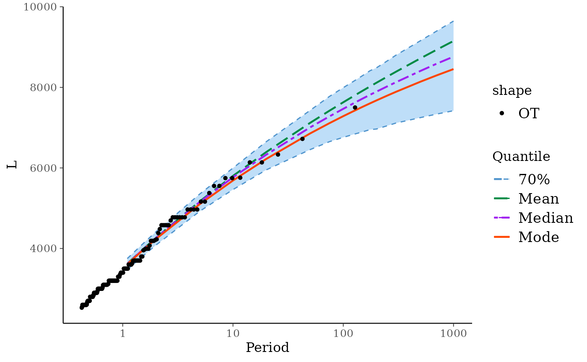

Poisson-GP Model with Bayesian Inference Results
poisGPBayes.RdCreate an object representing a Poisson-GP model with Bayesian inference result using the revdbayes package.
Arguments
- data
Numeric vector containing the marks.
- threshold
The threshold.
- effDuration
The effective duration of the observation period.
- a0, b0
Shape and rate for a gamma prior on the Poisson rate
lambda. Note that by choosinga0 = 1andb0 = 0we define an improper flat prior on \((0, \infty)\). Whilea0is dimensionless and compares to \(1 +\) a number of observations,b0has the dimension of a duration and compares to a duration of observation.- priorGP
A character defining which prior is used for the GP part of the model as in the revdbayes package.
- lowerGP, upperGP
Bounds on the GP parameters.
- trace
Level of verbosity.
Details
@details
This function mainly relies on the revdbayes package which
is used to produce the results of the Bayesian inference using
MCMC. However the Maximum A Posteriori (MAP) for the parameter
vector is computed by maximising the posterior function using a
numerical optimisation. This allows a better comparison with the
frequentist ML approach as used in
poisGP.
See also
poisGP for a comparable object with
frequentist inference results.
Examples
## ========================================================================
## Use the Garonne data from Renext
## ========================================================================
fit <- poisGPBayes(data = Garonne$OTdata$Flow,
threshold = 2500, effDuration = 64)
#> Warning: 'threshold' is smaller than the smallest observation
## ========================================================================
## Some S3 methods: RL for Return Levels, ...
## ========================================================================
class(fit)
#> [1] "poisGPBayes"
coef(fit)
#> lambda scale shape
#> mode 2.359557 1239.904 -0.1356296
RL(fit)
#> Period Level Mode Median Mean L U
#> 1 1.1 70% 3609.303 3618.069 3622.249 3475.020 3749.386
#> 2 1.5 70% 3940.193 3954.955 3960.563 3795.332 4098.430
#> 3 2.0 70% 4234.910 4259.698 4264.141 4083.407 4413.235
#> 4 5.0 70% 5100.513 5154.605 5170.913 4925.161 5352.844
#> 5 10.0 70% 5687.450 5768.397 5802.284 5462.380 5997.135
#> 6 20.0 70% 6221.722 6327.763 6392.509 5950.471 6649.227
#> 7 50.0 70% 6855.138 7004.816 7117.486 6453.699 7427.608
#> 8 75.0 70% 7111.266 7279.590 7420.467 6652.257 7775.053
#> 9 100.0 70% 7284.637 7466.466 7629.417 6758.908 7991.787
#> 10 125.0 70% 7414.531 7608.647 7788.237 6835.766 8155.347
#> 11 150.0 70% 7517.783 7722.144 7915.980 6895.842 8292.896
#> 12 175.0 70% 7603.111 7815.592 8022.615 6951.127 8413.295
#> 13 200.0 70% 7675.597 7892.799 8114.001 6965.566 8485.049
#> 14 250.0 70% 7793.836 8023.002 8264.737 7046.091 8654.157
#> 15 300.0 70% 7887.824 8125.949 8386.124 7113.225 8797.124
#> 16 500.0 70% 8139.108 8406.377 8718.208 7248.326 9156.076
#> 17 700.0 70% 8295.364 8584.671 8930.920 7335.337 9394.395
#> 18 1000.0 70% 8453.398 8762.482 9151.588 7420.329 9645.842
autoplot(fit)
#> Warning: Since 'data' has class "potData" the formal arguments 'effDuration', 'nOT', 'MAX.*' and 'OTS.*' are ignored
#> Warning: 'threshold' is smaller than the smallest observation
#> Scale for x is already present.
#> Adding another scale for x, which will replace the existing scale.
